01 · Vista principalPantalla 1 de 15 · Abrir imagen completa ↗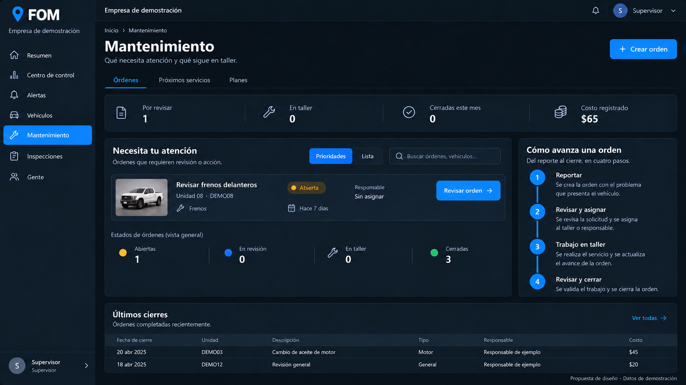02 · Lista de órdenesPantalla 2 de 15 · Abrir imagen completa ↗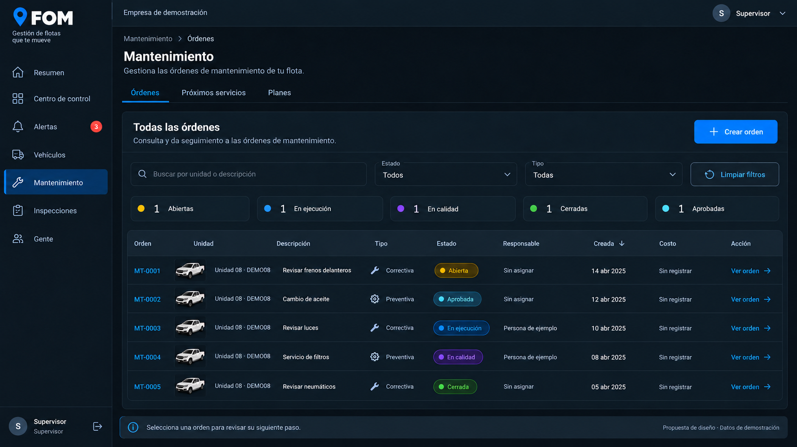03 · Crear orden · elegir unidadPantalla 3 de 15 · Abrir imagen completa ↗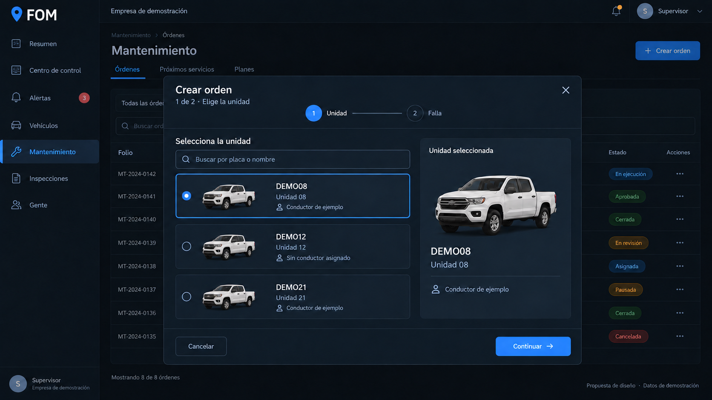04 · Crear orden · describir fallaPantalla 4 de 15 · Abrir imagen completa ↗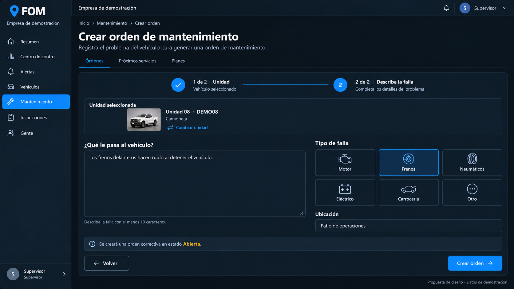05 · Detalle y revisión de una ordenPantalla 5 de 15 · Abrir imagen completa ↗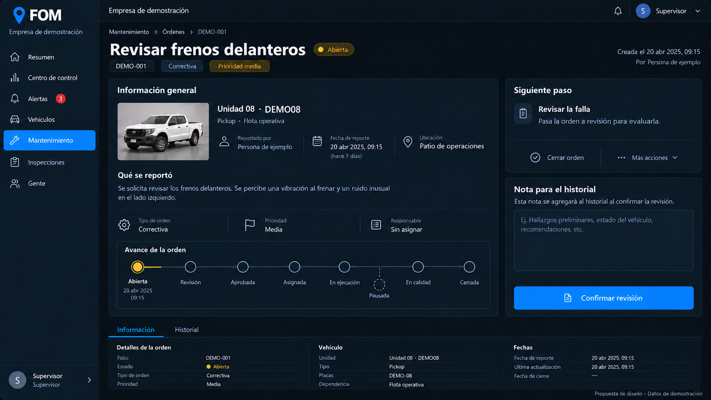06 · Asignar responsablePantalla 6 de 15 · Abrir imagen completa ↗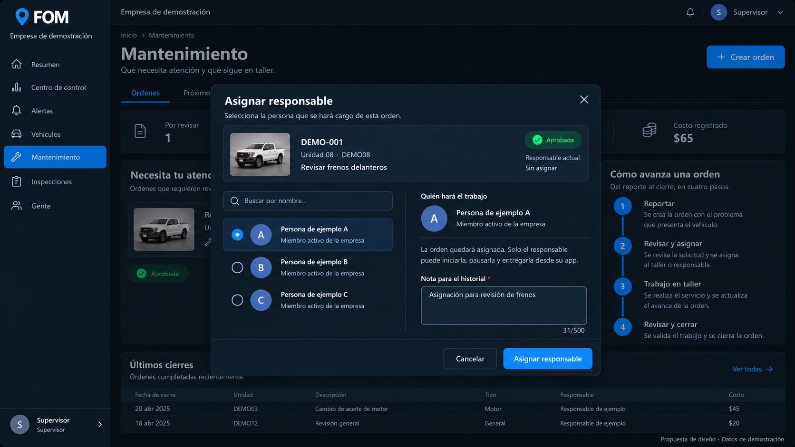07 · Seguimiento del tallerPantalla 7 de 15 · Abrir imagen completa ↗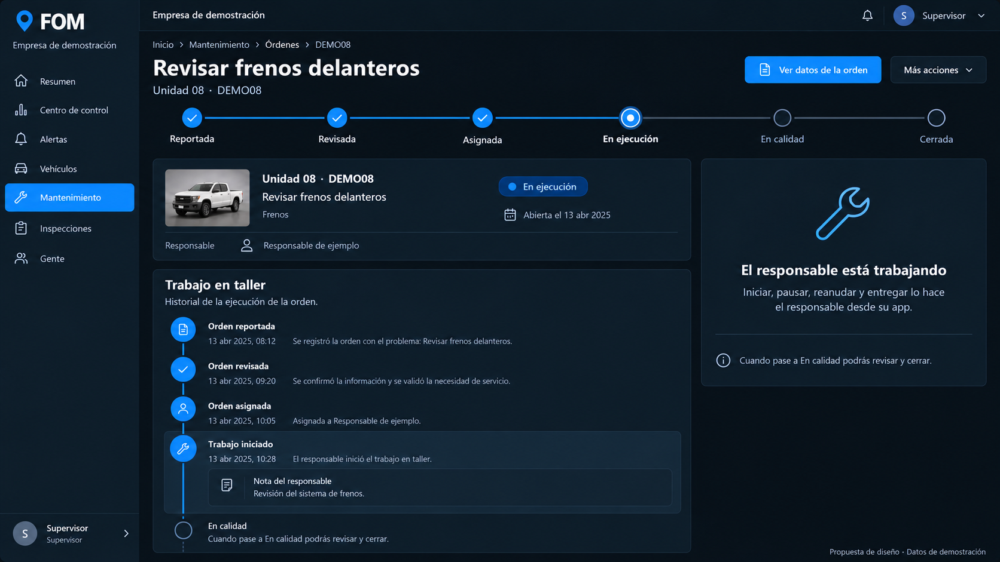08 · Cerrar una ordenPantalla 8 de 15 · Abrir imagen completa ↗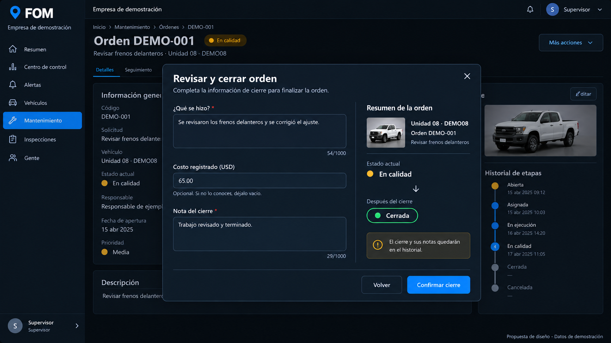09 · Confirmar cambio de estadoPantalla 9 de 15 · Abrir imagen completa ↗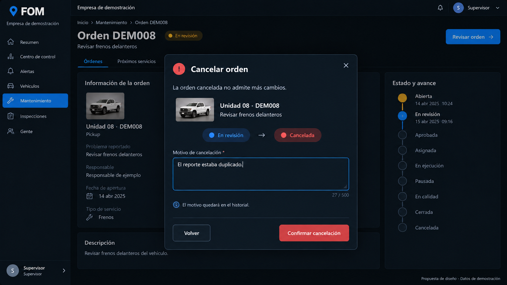10 · Próximos serviciosPantalla 10 de 15 · Abrir imagen completa ↗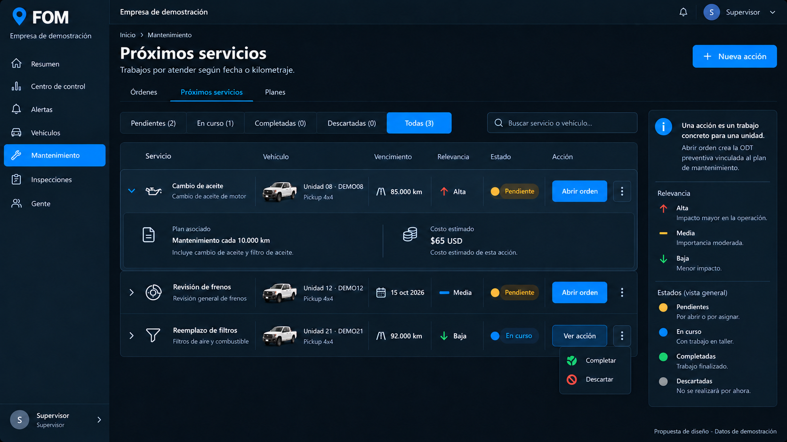11 · Planes de mantenimientoPantalla 11 de 15 · Abrir imagen completa ↗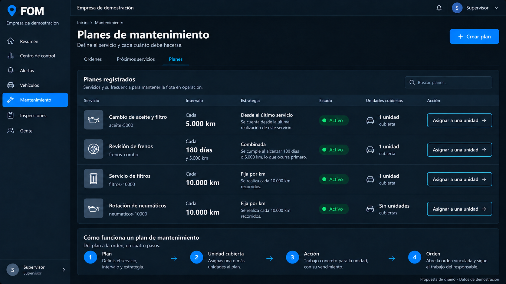12 · Crear un planPantalla 12 de 15 · Abrir imagen completa ↗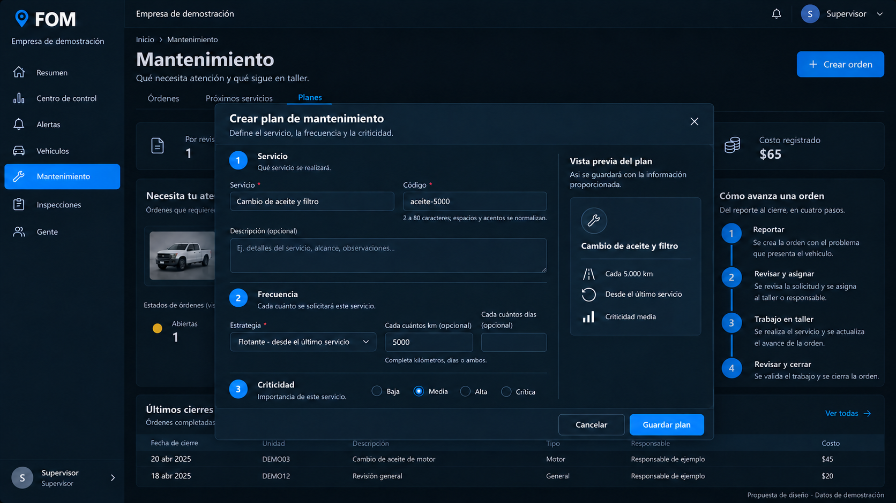13 · Asignar plan a una unidadPantalla 13 de 15 · Abrir imagen completa ↗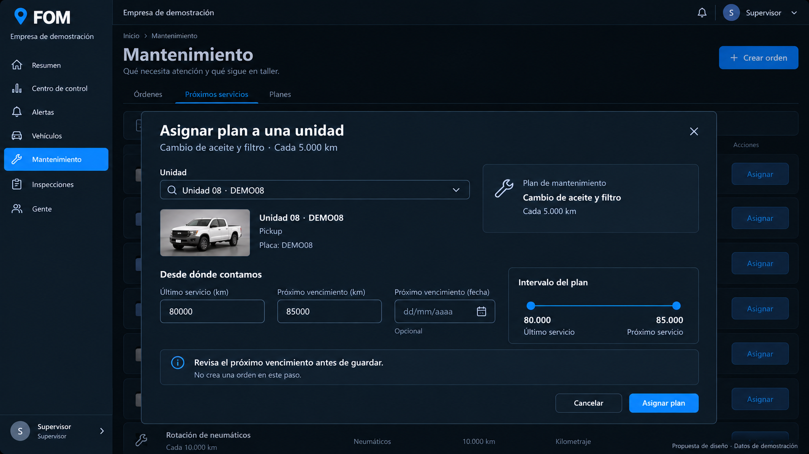14 · Crear acción de mantenimientoPantalla 14 de 15 · Abrir imagen completa ↗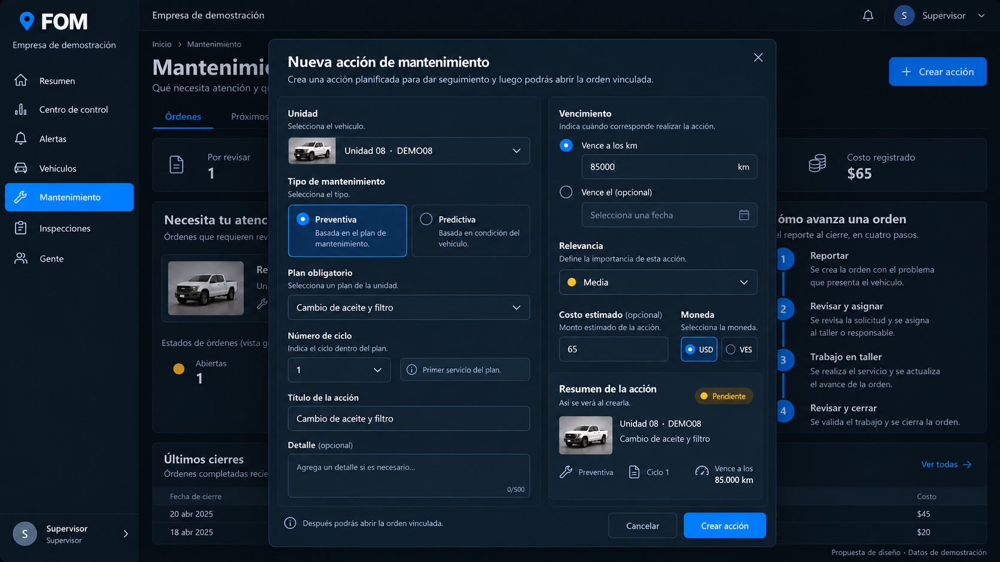15 · Completar una acciónPantalla 15 de 15 · Abrir imagen completa ↗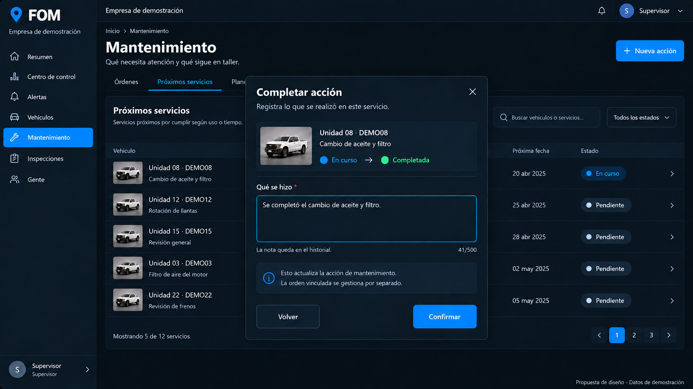